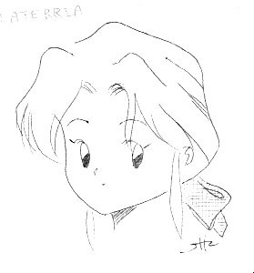
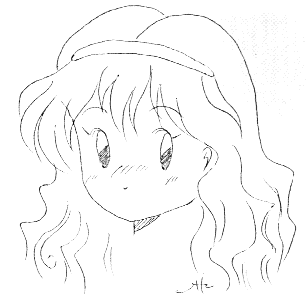
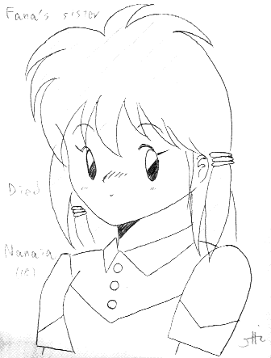
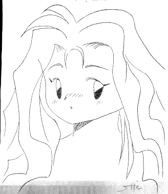
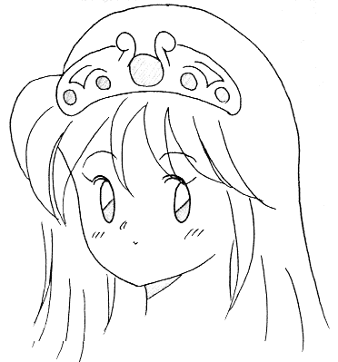
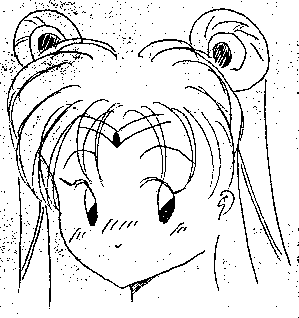
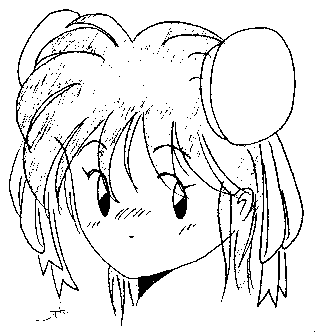
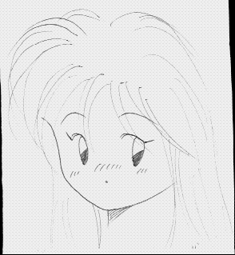
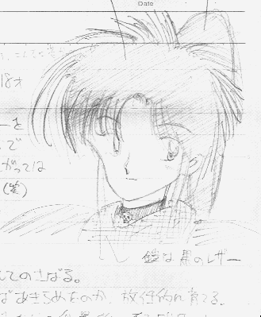

この中で一番マシなのは、stic20b.gifかな(AMOのを除く)。もっと精進せねば……。
--------------------------------------------------------------- [ Title ] 全身像を描かなきゃダメだ [ Filename ] stic20b.gif [ Author ] STIC [ Category ] Graphic Data [ Format ] GIF (c)CompuServe [転載の可否] 可 (連絡希望) [ Comment ] 敵、テキ、適? --------------------------------------------------------------- [ Description ]
全身像を描かなきゃダメだ、描かなきゃダメだ、描かなきゃダメだ……雨、逃げ出した後、そこに残ったのは、いつものようなイラストだった。みみみ……すいません、すいません。
さて、名前がまだありませんでした。今度のセッションにちょうどいいので(なにがだ?)、ユーリちゃんにしましょう。ユーリ・キルキラス・ヴェリー・ジェルスちゃん(7歳)です。今回は年相応でしょ? ね? ねっ?
[ History ] 1996/03/07 描く。 スキャナ、読込。
--------------------------------------------------------------- [ Title ] GIFなラテリアさん [ Filename ] stic13b.gif [ Author ] STIC [ Category ] Graphic Data [ Format ] GIF (c)CompuServe [転載の可否] 可 (連絡希望) [ Comment ] 何歳に見えます? --------------------------------------------------------------- [ Description ]
私がGame Master(GM)をした、Sword World RPG(TRPG)における、NPC(ノンプレイヤーキャラクター)です。フルネームは ラテリア・ロムロ・スティード・スキナーといいます。品よく落着いた雰囲気をもつ美人(に見えます?)で牧場主、という設定なんですが未亡人で31歳!! ……ダメ? (なにがだ)
ちなみにセッションを行なったのは、1993年の4月か5月でした。プレイヤーの数は6人だったんですが、これわ私にとっては最初の「多人数」で、すこしあせったりもしました。大抵 3人か4人だったもので……で、初心者の女の子が2人という! こっちの方が緊張する度合として大きかったかも(^^;。
絵についていえば……いえ、いわれたのは、31歳に見えないということ(^^;。ま、そりゃそーでしょー。でも、おばさんよりもいいぢゃないかー。ばあさんわいくらなんでもなー。「ばーさん」かな? ばーさんはしつこいとか、ばーさんは用済みだとか、ばーさんは……。
[ History ] 描いたのは大昔。 1996/02/28 スキャナ、読込。
--------------------------------------------------------------- [ Title ] GIFなローシェルちゃん [ Filename ] stic14a.gif [ Author ] STIC [ Category ] Graphic Data [ Format ] GIF (c)CompuServe [転載の可否] 可 (連絡希望) [ Comment ] こっちわ14歳 --------------------------------------------------------------- [ Description ]
私がGame Master(GM)をした、Sword World RPG(TRPG)における、NPC(ノンプレイヤーキャラクター)です。フルネームは ローシェル・パーレ・ルス・スキナーといいます。そうです。ラテリアさんの娘です……と書いても納得がいかない人は沢山いるでしょうな(^^;。芯の強さと気性の激しさをあわせもつ一方で、少女らしさを失っていない少女、という設定なんですが、イラストからはそういう感じが読みとれませんね。しくしく。
[ History ] 描いたのは大昔。 1996/02/28 スキャナ、読込。
--------------------------------------------------------------- [ Title ] GIFなナナイア [ Filename ] stic15a.gif [ Author ] STIC [ Category ] Graphic Data [ Format ] GIF (c)CompuServe [転載の可否] 可 (連絡希望) [ Comment ] キャラクター原案:佐々木亮 --------------------------------------------------------------- [ Description ]
私がGame Master(GM)をした、Sword World RPG(TRPG)における、NPC(ノンプレイヤーキャラクター)です。一つ前のセッションで、ファナというNPCがパーティに加わっていて、その妹です。で、このNPC(ナナイア)が出てくるセッションは、RPGマガジン(ホビージャパン)1992年8月号に掲載された、シナリオ「黄金の果実」を使いました。ちなみに、フルネームは、ナナイア・ニクシュ・チョート・ディマレーといいます。18歳、メイドさんです。
私のマスタリングがまずかったのか、それともシナリオそのものに欠陥があったのか、はたまたPCの行動にミスがあったのか、ナナイアはシナリオのラストで死んでしまいました。ガーゴイルに殺されちゃったと記憶しています……って、シナリオが残っているんだから、調べればすぐにわかるんですけどね。嗟呼、PCのキーボードは使いにくい! いえ、普段は98を使っているもんで。慣れていないだけですね。ハイ。MS-IME95も、そんなに悪くないです。
[ History ] 描いたのは大昔。 1996/02/28 スキャナ、読込。
--------------------------------------------------------------- [ Title ] GIFなイラニィ [ Filename ] stic16a.gif [ Author ] STIC [ Category ] Graphic Data [ Format ] GIF (c)CompuServe [転載の可否] 可 (連絡希望) [ Comment ] キャラクター原案:佐々木亮 --------------------------------------------------------------- [ Description ]
私がGame Master(GM)をした、Sword World RPG(TRPG)における、NPC(ノンプレイヤーキャラクター)です。ナナイアが出てきたシナリオに、同じく出演。ヨシュアというNPCに監禁され、父親を殺すと脅され、麻薬づけにされかかっている、薄幸のお嬢様で、領主の娘です。フルネームはイラニスニア・シューマン・クリッペン・トルートといいます。20歳です。
[ History ] 描いたのは大昔。 1996/02/28 スキャナ、読込。
--------------------------------------------------------------- [ Title ] GIFなメローラ女王さま [ Filename ] stic17b.gif [ Author ] STIC [ Category ] Graphic Data [ Format ] GIF (c)CompuServe [転載の可否] 可 (連絡希望) [ Comment ] 王女ではありません --------------------------------------------------------------- [ Description ] ツインビーのメローラ女王さまです。嗟呼っ! 女王さまっ!! [ History ] 描いたのは大昔。 1996/02/28 スキャナ、読込。
--------------------------------------------------------------- [ Title ] GIFなセーラームーン [ Filename ] stic18a.gif [ Author ] STIC [ Category ] Graphic Data [ Format ] GIF (c)CompuServe [転載の可否] 可 (連絡希望) [ Comment ] 無印セーラームーン --------------------------------------------------------------- [ Description ]
「美少女戦士セーラームーン」は、武内直子女史の著作物です。私はうさぎちゃん派で、ほたる教の隠れ信者であり、邪教徒であります。
[ History ] 描いたのは大昔。 1996/02/28 スキャナ、読込。
--------------------------------------------------------------- [ Title ] GIFな春麗 [ Filename ] stic19a.gif [ Author ] STIC [ Category ] Graphic Data [ Format ] GIF (c)CompuServe [転載の可否] 可 (連絡希望) [ Comment ] 全然似てない --------------------------------------------------------------- [ Description ] 対戦格闘ゲーム、ストリートファイター・シリーズはカプコンの著作物です。 [ History ] 描いたのは大昔。 1996/02/28 スキャナ、読込。
--------------------------------------------------------------- [ Title ] GIFなサフィ [ Filename ] stic12a.gif [ Author ] STIC [ Category ] Graphic Data [ Format ] GIF (c)CompuServe [転載の可否] 可 (連絡希望) [ Comment ] サフィは死んだ --------------------------------------------------------------- [ Description ]
私がGame Master(GM)をした、Sword World RPG(TRPG)における、NPC(ノンプレイヤーキャラクター)です。妃の侍女で、シェア・クラムナー(AMOのPC)とアツアツ(死語)。シェアの持っているお守りには、サフィのアソコの毛が入っているらしい。ちなみに、死んでません。
[ History ] 描いたのは大昔。 1996/02/28 スキャナ、読込。
--------------------------------------------------------------- [ Title ] AMOなカーティス・ヴァラリス [ Filename ] amo01b.gif [ Author ] AMO (空雲 美鳥[あも みどり]) [ Category ] Graphic Data [ Format ] GIF (c)CompuServe [転載の可否] 可 (連絡希望) [ Comment ] 友人の絵です --------------------------------------------------------------- [ Description ]
AMO のPlayer Character(PC)こと、カーティス・ヴァラリスです。System(Game)は、 Sword World(TRPG)です。
[ Profile (AMO) ]
どっかの町のえーへーを父にもつ。小さなころからワルガキで、十五で不良と呼ばれたらしい。ナイフみたいにとがっては、さわるものみな××(てびょうし)傷つけた(笑)。冗談はさておき、えーへーの父とパンピーの母とせいそでかれんな二つ年上の姉をもつ。幼いころからおてんばで、近所のガキどもをたばねて、ガキ大将として、のさばる。姉が女らしく育ったんで、両親もなかばあきらめたのか放任的に育てる。が、十歳になってもおちつくよーすがないんで、ただの乱暴者になるよりは、と父が剣術などを教えるよーになる。
そんなこんなで十五のときに武者修行の旅に出されることになるのだが、そんときに知りあったルート(PC)とともに、破壊の道をつきすすむことになったよーな気がする。ちなみに武器フェチでフェミニストなのだが、これは姉の影響が大きいらしい。ここでは詳しいことは省くが(以下、略)。
次回予告:
なぜ武器フェチ＆フェミニストなのか? さらになぜエルフ語を解するのか? 様々な謎が今ときあかされる! 乞う、ご期待!! こいつァすごいぜ! (ウソ)
[ History ] 1994/??/?? 描く。 1996/02/28 スキャナ、読込。 [ Appendix ] --------------------------------------------------------------- "SWORD WORLD RPG" CHARACTER SHEET --------------------------------------------------------------- 能力値 ボーナス CHARACTER NAME 器用度 [10] (+1) [カーティス・ヴァラリス] 敏捷度 [14] (+2) 種族 性別 年齢 知 力 [18] (+3) [Human] [Female] [18] 筋 力 [21] (+3) 所持金 生命力 [19] (+3) [Unknown] 精神力 [11] (+1) 生まれ 生命抵抗 [+5] [Unknown] 精神抵抗 [+6] 技 能 経験点 冒険者レベル 呪歌 レベル 魔力 [Unknown] [2] [ ] [ ] [ ] 技能名 レベル [ ] [ ] [ ] [ファイター] [2] 言語 [レンジャー] [1] [エルフ語] [セージ ] [1] 容姿: 赤毛のポニーテール。鎧は黒のレザー。